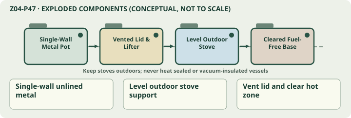

Z04-P47 · Water · Adapted historical material
Match boiling vessels to stoves and outdoor fires safely
Prevent tipping burns, vessel failure and carbon monoxide hazards when heating water for microbial treatment.
When it applies · Boiling acceptable raw water outdoors on a portable camp stove or authorized campfire ring.
Equipment · Plain single-wall heat-safe metal pot with lid and lifter/handle, stable outdoor stove or authorized grate and level non-combustible base.

Actions
- Use only single-wall, unlined heat-safe metal vessels—never heat sealed bottles, vacuum-insulated flasks (which can rupture) or plastic containers over flame.[W02, C15, ED]
- Check pot stability on stove supports or fire grates on level cleared outdoor ground so boiling water cannot tip onto legs or extinguish the burner with spilled fuel.[C15, C02, ED]
- Keep all stove and fire boiling strictly outdoors away from tents, vestibules and vehicles, and use a pot lifter or insulated grip when removing hot lids.[C05, C16, C15]
Failure recognition · Placing a vacuum-insulated steel bottle on coals or balancing an oversized heavy pot on a narrow ultralight stove inside a tent vestibule.[C05, C15, ED]
Verify · Confirm single-wall unlined metal construction, unsealed lid venting, level outdoor support and clear space around the hot zone.[C15, C05, ED]
Stop or change course · If the vessel is sealed, lined, unstable or the only sheltered space is enclosed, stop heating and use an alternate safe method or supply.[C05, C15, W02]
Evidence and editorial notes
- C02 · USDA Forest Service / Smokey Bear · Smokey Bear’s Campfire Safety Guide (agency PDF)
- Section: Build your campfire; choose a location · Conditions: Where campfires are currently permitted
Support: Use an established fire ring where required or available. Protect the area from nearby combustible materials, avoid windy conditions and keep water ready.
Limitations: Site clearances vary by fuel load, slope, and wind; no universal safe radius fits all terrain. · Conflicting evidence: None; aligns with USFS-FIRE.
Editorial note: Grounds site-selection and ring-preparation procedures. · Specialist reviewer: Fire prevention and land management
Primary source · checked 2026-11-24 - C05 · CPSC · Portable Heaters and Camping Equipment (current web edition)
- Section: Carbon monoxide poisoning from portable camping equipment · Conditions: Tents, campers, vehicles and other enclosed spaces
Support: Fuel-burning camping equipment can lead to fatal carbon monoxide buildup in enclosed spaces.
Limitations: High altitude increases incomplete combustion and CO production. · Conflicting evidence: None; aligns with CDC-CO and NPS guidance.
Editorial note: Hard-stop prohibition against indoor/vestibule/tent combustion. · Specialist reviewer: Carbon monoxide safety and emergency medicine
Primary source · checked 2026-11-24 - C15 · NPS · Wildland Fire Safety (current web edition)
- Section: Wildland Fire Safety > Campfires and Stoves · Conditions: Outdoor cooking with portable liquid or canister stoves
Support: Operate stoves on level cleared ground away from tents and dry fuels, cool completely before refueling, and move away from any spilled fuel before lighting.
Limitations: Fuel canisters behave differently in cold weather and high elevation; follow manufacturer limits. · Conflicting evidence: None; aligns with CPSC-C and USFS-FIRE.
Editorial note: Governs stove setup, refueling isolation, and spill failure recognition. · Specialist reviewer: Portable appliance safety and fire prevention
Primary source · checked 2026-11-24 - C16 · CDC · Carbon Monoxide Poisoning Basics (current web edition)
- Section: Carbon Monoxide Poisoning Basics > Sources and Prevention · Conditions: Any enclosed or semi-enclosed structure, garage, porch, tent, or vehicle
Support: Never burn charcoal, operate camp stoves, or run fuel-burning heaters inside homes, garages, tents, or vehicles even with doors or windows partly open.
Limitations: Vent cracks and open garage doors do not prevent lethal CO accumulation. · Conflicting evidence: Refutes dangerous myth that cracking a tent vent or garage door makes indoor combustion safe.
Editorial note: Hard-stop rule across all Z02 ventilation and Z03 combustion cards. · Specialist reviewer: Carbon monoxide safety and emergency medicine
Primary source · checked 2026-11-24 - W02 · CDC · How to Make Water Safe in an Emergency (2024-09-19)
- Section: Boil > Steps for boiling water · Conditions: Microbiologically suspect water with acceptable chemical source; portable heat and safe vessel
Support: Clarify cloudy water first. Rolling boil for one minute; above 6,500 feet for three minutes. Cool and cover in sanitized containers.
Limitations: Does not remove dissolved metals, nitrates, fuel, or cyanotoxins. · Conflicting evidence: Older Track B B009 omitted the 6,500 ft threshold; CDC threshold governs.
Editorial note: Require explicit timer verification after rolling boil starts. · Specialist reviewer: Drinking-water safety and public health
Primary source · checked 2026-11-24
Source lineage · B009 vessel notes and NPS/CPSC stove safety; new manuscript · Classification · Adapted historical material.